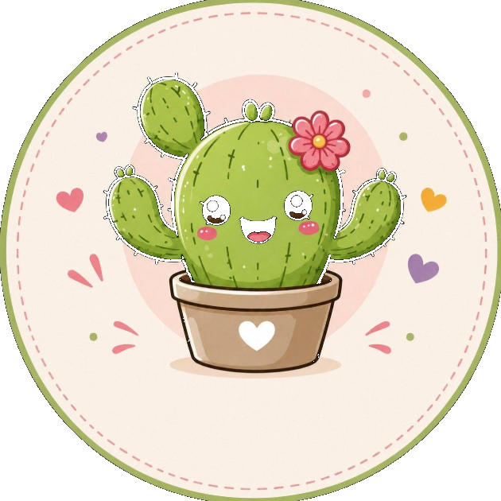

Color para jugar
Ropita alegre para correr, descubrir y llenar el día de aventuras.
✿
TunitaKIDSUn mundo de ternura, color y comodidad para acompañar cada aventura de los más chiquitos.

Creemos que la infancia está hecha de momentos chiquitos que se vuelven enormes: el primer pasito, una tarde de juegos, un abrazo calentito.
Por eso estamos preparando una tienda llena de ropita linda y cómoda, elegida con mucho amor para acompañar a cada peque en sus aventuras.
Paseá por nuestro mundo →La misma ternura, en cada detalle.
Ropita alegre para correr, descubrir y llenar el día de aventuras.
✿Comodidad para que cada peque explore el mundo a su manera.
♡Nacimos en Mercedes, Soriano, y llegamos a todo Uruguay.
✦Estamos preparando un montón de sorpresas. Muy pronto vas a conocer nuestra primera colección.
Seguí la aventura en Facebook ↗